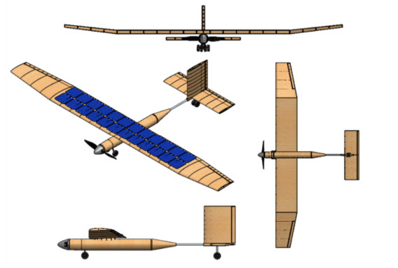
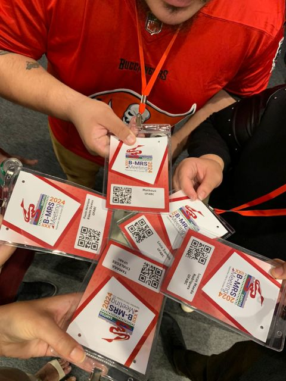
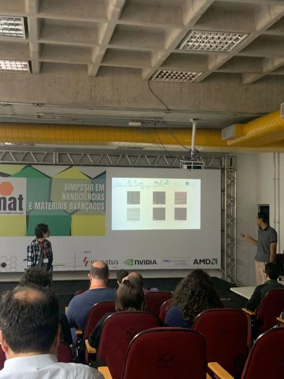
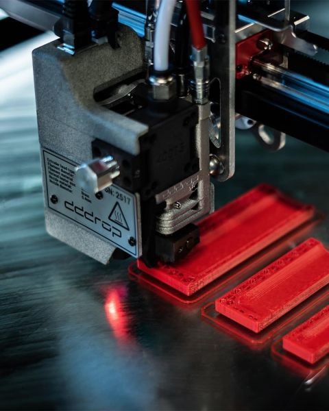

Iniciação científica - Desenvolvimento de aeromodelo solar
Logo no início da graduação em Engenharia Aeroespacial na Universidade Federal do ABC (UFABC), desenvolvi minha primeira pesquisa de Iniciação Científica, voltada ao projeto preliminar de uma aeronave não tripulada movida a energia solar. O trabalho representou meu primeiro contato com a pesquisa científica e com a aplicação de ferramentas computacionais ao desenvolvimento de soluções para uma aviação mais sustentável.
A pesquisa começou com um levantamento bibliográfico sobre os conceitos, a evolução histórica e as soluções de engenharia empregadas em aeronaves solares, incluindo projetos como Sky-Sailor, Icare II, SunSeeker e Solar Impulse. A partir dessa análise, foi selecionada uma aeronave de referência para orientar o desenvolvimento do modelo, com etapas e entregas organizadas por meio de uma Work Breakdown Structure (WBS) e de um cronograma de atividades.
O dimensionamento preliminar envolveu o estudo de uma missão de voo de cruzeiro com duração de uma hora, considerando a demanda energética dos sistemas de propulsão e controle. Foram avaliados o número de células solares e de baterias necessários, bem como os impactos de suas massas sobre a carga útil e o peso total da aeronave, buscando equilibrar autonomia, eficiência energética e viabilidade do projeto.
Utilizando o SolidWorks, desenvolvi a modelagem tridimensional da aeronave e de seus principais componentes, incluindo fuselagem, motor, hélice, baterias e células solares. O modelo de referência foi adaptado para acomodar os componentes selecionados, com modificações na geometria e na estrutura interna da fuselagem, além do desenvolvimento de suportes e da disposição dos sistemas embarcados.
Por fim, realizei simulações preliminares de dinâmica dos fluidos computacional (CFD) para investigar a distribuição de velocidades e pressões ao redor da aeronave, além de uma análise estrutural pelo Método dos Elementos Finitos (MEF) para avaliar tensões e deformações na fuselagem. Por se tratar de um estudo exploratório desenvolvido no início da graduação, as análises apresentaram limitações metodológicas e de modelagem, indicando a necessidade de refinamentos e validações adicionais. Ainda assim, o projeto proporcionou uma experiência fundamental em pesquisa, planejamento, modelagem CAD, dimensionamento e simulação computacional aplicada à engenharia aeroespacial.
.jpeg)
Desenvolvimento de Placas Bipolares por Impressão 3D (CTIM EMBRAPII / UFABC)
Atuei no Grupo de Ciência, Tecnologia e Inovação em Materiais (CTIM), unidade EMBRAPII sediada na UFABC, em um projeto de Pesquisa & Desenvolvimento (P&D) em parceria com a Volkswagen no âmbito do programa Rota 2030, focado no desenvolvimento de protótipos de células a combustível de hidrogênio para o setor automotivo.
O principal desafio técnico consistiu na fabricação de placas bipolares — componentes essenciais onde ocorrem as reações eletroquímicas — utilizando tecnologia de impressão 3D por modelagem por deposição de filamento fundido (FFF). Para viabilizar a fabricação, participei do desenvolvimento de formulações poliméricas condutoras próprias obtidas por extrusão, buscando equilibrar propriedades mecânicas adequadas e alta condutividade térmica e elétrica.
Minhas atividades envolveram a modelagem 3D avançada de geometrias complexas para as placas, além da realização de simulações térmicas e de dinâmica dos fluidos computacional (CFD) para analisar o comportamento do escoamento do fluido e a distribuição de calor no interior da estrutura.
Ao longo do projeto, desenvolvi sólida experiência prática em fabricação aditiva, engenharia de materiais poliméricos, modelagem CAD e simulações CAE aplicadas a sistemas de energia. A vivência em um projeto de alta complexidade industrial consolidou minha capacidade de atuar em equipes multidisciplinares e de lidar com desafios tecnológicos reais de engenharia.
Por fim, os resultados e os protótipos desenvolvidos foram apresentados em reuniões técnicas com representantes da Volkswagen e divulgados à comunidade científica na Reunião Anual da SBPMat 2024, realizada em Santos, evidenciando o impacto prático da pesquisa aplicada.
Galeria de Mídia: Placas Bipolares e Impressão 3D
Registro do desenvolvimento de filamentos, protótipos e apresentações.
.jpeg)


